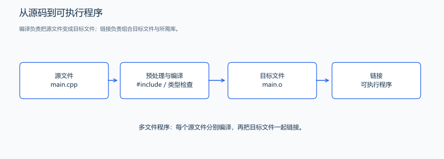

（一） 程序结构与编译
先让程序输出一句话，再让它处理输入的两个数。运行这两个小程序时，分别观察“代码怎样被执行”和“答案怎样进入输出”。
1. 第一份程序的结构与语句作用
题目原文（自拟）： 程序无需输入，输出一行 Hello, C++!。
#include <iostream> // 提供标准输入输出流的声明。
int main() { // main 是程序的入口；int 表示向运行环境返回整数状态。
std::cout << "Hello, C++!\n"; // << 把右侧文本写入输出流，\n 换行。
return 0; // 0 表示正常结束，不会自动显示在屏幕上。
}输出：
Hello, C++!从 main 的左花括号进入，先执行输出，再执行 return，程序结束。#include 是预处理指令，不是运行时执行的一次输出；头文件使编译器认识 cout 等标准库名字。std 是标准库的命名空间，std::cout 明确指定名字属于哪里。
普通语句通常以分号结束，花括号把若干语句组成一个代码块。// 到行末是注释，/* ... */ 是块注释。程序执行输出语句中的操作，注释则用来解释这些操作；main 的花括号标出函数体，输出语句后的分号标出这条语句的结束。
双引号中的文本是字符串字面量；这里直接输出它，不需要先创建 STL 的 string。\n 是一个换行字符，\\ 表示反斜线，\" 表示双引号。源代码的换行便于阅读，输出是否换行则由输出内容决定。
2. 从固定输出到读入后计算
题目原文（自拟）： 输入两个整数 a、b，满足 \(-10^6\le a,b\le10^6\)，输出它们的和。
分析： 先准备两个保存整数的变量，用 cin 按顺序读入，最后把 a+b 的结果交给 cout。这里 + 表示整数加法，long long 用于保存整数；类型与范围在下一节展开。
#include <iostream>
int main() {
long long a = 0, b = 0; // 先创建有名称的存储，并给出初值。
std::cin >> a >> b; // >> 按两个变量的类型读取两个数，空格或换行均可分隔。
std::cout << a + b << '\n'; // 输出计算结果；不输出额外的输入提示。
return 0;
}输入：
3 5输出：
8读完后 a 为 3、b 为 5，表达式得到 8。cout 写出 8 与换行；return 0 向环境报告结束状态，与“输出整数 0”是两件事。竞赛评测给输入、比答案，除非题面要求，不添加“请输入”“结果为”等提示。
后面的学习程序常用 using namespace std;，于是可直接写 cin、cout。先掌握这两种写法，命名空间章节再解释名字冲突和多文件组织。
3. 源代码的编译与执行

预处理先处理 include、宏等指令；编译检查语言规则并生成目标代码；链接把需要的实现组合成可执行文件。不同工具可能合并展示这些步骤，错误仍可按发生阶段定位。
将程序保存为 main.cpp，以 GCC 为例执行：
g++ -std=c++17 -Wall -Wextra main.cpp -o main-std=c++17 选择标准，-Wall -Wextra 开启常用警告，-o main 指定输出名称。Windows 上通常生成 main.exe，可在 PowerShell 中用 ./main.exe 运行。修改源码后需要重新编译，旧可执行文件不会自动变成新代码。
| 观察到的情况 | 先检查什么 | 例子 |
|---|---|---|
| 编译不通过 | 语法、名字、类型、头文件 | 漏分号，cout 拼成 cuot |
| 链接不通过 | 已声明的函数是否有实现、源文件是否都参与链接 | 声明了 add，却未提供定义 |
| 能运行但答案错误 | 题意、公式、边界与输出 | 输出了 a-b，题目要求 a+b |
| 运行中异常结束 | 非法访问、除零、资源与递归深度 | 数组越界、除数为 0 |
读诊断时先处理靠前的错误，再重新编译；一个漏掉的符号可能引出很多后续诊断。警告也可能指出未初始化或类型不匹配的问题。先手算、运行样例，再用零、负数和题目中的最大规模核对运行结果。
练习题： 洛谷 P1001 — A+B Problem。
下一步把“两个整数变量”拆开理解：类型、名称、初值分别决定了什么。